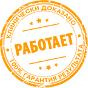

Забудьте про пивной живот!
TwinsFit делает живот плоским всего за 1 курс применения!


- Снижает вес
- Растапливает жир в области живота и боков
- Препятствует развитию хронических заболеваний
- Нормализует гормональный фон
Пивной живот является следствием абдоминального ожирения, во время которого слоем жира покрываются все внутренние органы. При таком типе ожирения силуэт человека напоминает форму яблока.
Чем больше вы пьете пива, тем больше у вас живот! Кроме того, ваша фигура становится все больше похожа на женскую. Почему?
Калории
Пиво очень калорийный напиток. Кроме того, калорийными являются закуски к нему, которые при распитии пива поедаются в неограниченном количестве. В результате организм не может потратить полностью всю энергию, поступившую извне, и она откладывается в виде висцерального жира.
Фитоэстрогены
(женские половые гормоны)
Фитоэстрагены содержатся во всех сортах пива (они получаются из хмеля). Фитоэстрагены откладываются в жировой прослойке и препятствуют выработке мужского гормона – тестостерона. Это приводит к сокращению мышечной ткани и росту жировой.
Сосуды забиваются холестерином (89% людей, страдающих от абдоминального ожирения, имеют гипертоническую болезнь)
Заболевания желудка, печени и почек (риск появления язвы желудка или двенадцатиперстной кишки выше в 63 раза!)
Появление частых брюшных грыж
Высокий риск возникновения онкологических заболеваний (в 15 раз выше!)
Повышенный риск возникновения сахарного диабета (в 37 раз выше, чем у худых людей)
Сердце работает в ускоренном темпе и быстро изнашивается (повышенный риск инфаркта и инсульта в 56 раз!)
Мышцы становятся дряблыми, все тело плывет, мужчина теряет силу
Снижается выработка мужских гормонов (снижение потенции и полового влечения в 94% случаев)
Разрушение коленных, тазобедренных суставов и позвоночника
Какие мужчины не вызывают симпатии у окружающих?

Низкое либидо
Плохой любовник
Повышенное потоотделение
Дурной запах
Выпирает большой живот
Женоподобная грудь и руки
Какие мужчины
нравятся всем?

Подтянутая фигура
Здоровое сердце и сосуды
Повышенная жизненная энергия
Высокое либидо
Отличный любовник
Высокие силовые показатели
Это ваша жизнь! Неужели вы хотите оставаться полным?
Получить за 129 грнЕсли у Вас ожирение по женскому типу, незамедлительно примите меры!
В области живота мало микрокапиляров, а потому кровоток в этой области сильно замедлен – в результате замедлен и обмен веществ. Даже если вы будете активно худеть и заниматься спортом, из области живота и с боков жир будет уходить намного медленнее. Однако этот процесс можно в значительной мере ускорить.
TwinsFit – первый в мире комплекс, направленный на борьбу с висцеральным жиром. Именно этот жир образует пивной живот и делает фигуру женоподобной.
TwinsFit устраняет причины скопления жировой прослойки, стимулирует кровоток и усиливает обмен веществ. Организм начинает активно перерабатывать накопленный жир – сначала осевший на внутренних органах, потом подкожный.
7 самых сильных компонентов
запускают растопку жира за счет ускорения обменных процессов!
При приеме TwinsFit жир с живота уходит на полном автомате – достаточно просто ежедневно принимать комплекс. Этому способствует особый состав комплекса.
Экстракт Дихростахиса Dyglomera® DYG-400-P
(запатентовано)
Экстракт Циссуса четырехугольного Cissus CQR-300®
(запатентовано)
Экстракт Манго африканского IGOB 131®
(запатентовано)
Экстракт перца стручкового Lipofuel®
(запатентовано)
Экстракт Черного перца Bioperine®
(запатентовано)
Экстракт Гуараны
Кофеин (98%)
Уникальные ингредиенты собраны в единую формулу и работают в одном направлении – устранение жира.
Получить за 129 грнМнение диетолога
«Если вы хотите быть здоровыми, избавляйтесь от пивного живота как можно раньше. Такой вид ожирения способен сделать вас больным человеком. До недавнего времени не существовало средства, которое позволяло бы растапливать висцеральных жир столь эффективно именно для мужчин. Однако сейчас такое средство есть – TwinsFit. Это первый комплекс, который предназначен для борьбы с висцеральным жиром, и, как показывает опыт его использования, он обладает достаточно высокой эффективностью. Так как TwinsFit является полностью натуральным, он идеально подходит для домашнего устранения пивного живота и возвращения фигуре более мужских черт. Я рекомендую TwinsFit всем мужчинам без исключения, столкнувшимся с этой проблемой. В среднем похудение с помощью TwinsFit занимает всего 1-3 месяца – это очень мало, средство крайне эффективное».
Е.В. Галаева, врач-диетолог
Эффект сушки
Избавьтесь от пивного живота всего за 1 курс применения!
Уникальные ингредиенты собраны в единую формулу и работают в одном направлении – устранение жира.
Получить за 129 грнКАК БЫСТРО ВЫ ИЗБАВИТЕСЬ ОТ «ПИВНОГО ЖИВОТА»?
3 этапа растопки опасного жира:
Почему TwinsFit?
TwinsFit – единственный комплекс, направленный на борьбу с абдоминальным ожирением, оказывает нормализующие действия сразу на все системы организма, ответственные за процессы жиросжигания и переработку калорий. TwinsFit обеспечивает ГАРАНТИРОВАННОЕ похудение вне зависимости от физиологических особенностей человека.
Продлите свою жизнь и предотвратите риск возникновения опасных заболеваний!
Отзывы УКРАИНСКИХ покупателей
Отличный препарат. Очень жалею, что не узнал о нем раньше. Пытался убрать пивной живот в спортзале, почти 3 месяца мучил себя тренировками, живот уменьшился лишь на пару-тройку сантиметров. Как стал пить Твинсфит, он пропал полностью за 1,5 месяцев без каких-либо усилий. Крайне эффективное и современное средство. Каких-либо побочек не ощутил. Чувствую себя замечательно. Как минимум попробовать, советую всем. Этот препарат способен впечатлить любого!
Марат Гостюнин, 36 лет, Киев
В последний год пивной живот стал приносить массу неудобств. Кроме того, я вдруг осознал, насколько это некрасиво. Плюс появилась потребность в занятиях спортом, а с животом особо не побегаешь. Диетолог (знакомая жены) посоветовала использовать этот комплекс. Но не думал, что он так помогает. Живот буквально начал сдуваться на глазах. При этом я не занимался спортом и особо не ограничивал себя в еде – просто есть не хотелось. В итоге живот уменьшился. Спасибо!
Кирилл Черпак, 28 лет, Харьков

Худела с помощью этого средства в прошлом году. Скинула почти 28 кг. До этого не худела так никогда. За больше чем 9 месяцев вес не вернулся. Раньше была гипертония, после похудения она пропала. Также перестали болеть суставы. Фигура преобразилась – мужчины снова стали делать комплименты. Очень рада, что в свое время открыла для себя это средство. Рекомендую всем
Марина Петрова, 31 год, Одесса
Понравился Твинсфит. Из всего, что пробовал, помог лучше всего. Первые результаты похудения в животе и в боках заметил уже через 5 дней после начала приема, когда замерил объем живота. Ушло 2 см (было 98 см, стало 96 см). Далее живот стал сокращаться быстрее. Сам процесс похудения не доставил никаких неудобств. Просто и быстро. Все, что делал, это принимал Твинсфит согласно рекомендуемой программе (написана в инструкции). Спасибо за полезный продукт!
Михаил Корчагин, 51 год, Днепр
Отличное средство. Помогло. Живот был большой – пиво очень люблю. Пил литрами и почти каждый день. Естественно, с рыбой, сухариками, чипсами. Живот рос. Недавно появились проблемы со здоровьем из-за этого. Жена приказала худеть. После изучения информации в интернете о способах похудения в этом месте, натолкнулся на Твинсфит. Решил попробовать. Живот пропал за 5 месяцев. Сейчас чувствую себя замечательно, как будто даже помолодел.
Виктор Сальников, 44 года, Нежин
Успейте заказать со скидкой
Акция один день!
Наши операторы онлайн круглосуточно без выходных — заказывайте!
Конфиденциальность гарантирована. Оплата при получении
Вы оставляете заявку на сайте
Мы связываемся с вами

Отправляем вашу посылку
Вы оплачиваете при получении